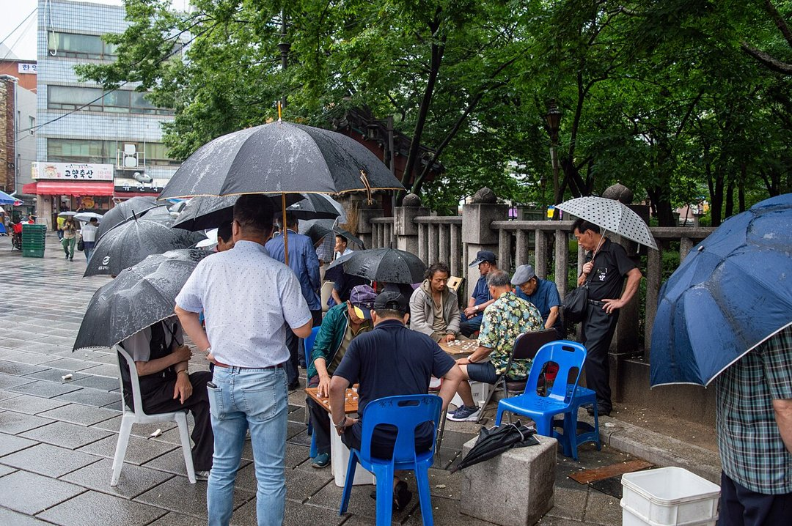

📷 사진 1 자리

▲ 서울 탑골공원 근처에서 장기를 두는 어르신들(2019년 자료사진) · 사진: Tristan Surtel / CC BY-SA 4.0 / 위키미디어 공용
2027년 노인일자리는 11월 27일(금)부터 12월 24일(목)까지 신청해요. 주소지의 행정복지센터, 노인복지관, 시니어클럽, 대한노인회 같은 수행기관에 가거나 온라인 '노인일자리 여기'에서 하면 돼요. 가장 많은 공익활동형은 기초연금을 받는 65세 이상이 대상이고 월 29만 원을 받아요.
내년 일자리는 118만 개로 역대 가장 많아요. 다만 유형마다 나이와 조건이 달라서 부모님께 맞는 유형부터 골라야 해요.
3줄 요약
우리 부모님은 어떤 유형일까
보건복지부 보도자료에 붙은 사업 개요 표를 옮겼어요.
| 유형 | 대상 | 한 달 활동 |
|---|---|---|
| 공익활동형 | 기초연금 수급 65세+ | 30시간, 29만 원 |
| 역량활용형 | 65세+(일부 60세+) | 60시간, 77만 원 |
| 공동체사업단 | 60세+ | 사업단마다 다름 |
| 취업지원형 | 60세+ | 근무처 급여 |
공익활동형은 11개월, 역량활용형은 10개월 동안 활동해요.
공익활동형은 노노케어나 공공시설 봉사처럼 지역사회 공익 활동이에요. 70만 9천 개로 전체의 60%쯤 돼요. 역량활용형은 경력을 살려 돌봄, 안전, 환경 같은 분야에서 서비스를 하는 일이고 21만 5천 개예요.
활동비를 시간으로 나눠 보면 두 유형 모두 시간당 1만 원 안팎이에요. 공익활동형은 시간당 9,700원 남짓, 역량활용형은 1만 2,800원 남짓이에요(단순 계산).
기초연금이 없다면
공익활동형은 기초연금 수급이 조건이에요. 기초연금을 받지 않는다면 역량활용형이나 60세부터 되는 공동체사업단·취업지원형을 보면 돼요. 공동체사업단은 실버카페처럼 어르신들이 함께 매장을 운영하는 방식이에요. 취업지원형은 경비처럼 관련 일을 할 수 있는 분을 기업에 연결해 줘요.
📷 사진 2 자리
▲ 서울 탑골공원(2019년 자료사진) · 사진: Tristan Surtel / CC BY-SA 4.0 / 위키미디어 공용
신청하는 방법
1. 전화로 먼저 물어보기: 노인일자리 상담 대표전화 1544-3388로 걸면 지금 있는 곳에서 가장 가까운 수행기관으로 연결돼요.
2. 방문 신청: 주소지 시군구 안의 행정복지센터나 노인복지관, 시니어클럽, 대한노인회에 가요. 전국 수행기관은 1,342곳이에요.
3. 온라인 신청: '노인일자리 여기'(www.seniorro.or.kr) 첫 화면 검색창에 사는 지역 이름을 넣고, 나온 지역구를 눌러 신청해요.
지방정부 여건에 따라 기간 안에서도 접수 시작일이 다를 수 있어요. 가까운 기관에 접수 날짜부터 물어보세요.
어떻게 뽑나
소득 수준, 활동 역량, 경력을 점수로 매겨 높은 순서로 뽑아요. 2027년에는 처음 참여하는 사람의 가점과 활동 역량 배점을 늘리고, 소득에 따른 차이를 더 크게 반영하기로 했어요. 처음 신청하는 분에게 조금 유리해진 셈이에요.
일자리 수는 2025년 109만 8천 개, 2026년 115만 2천 개에서 2027년 118만 개로 늘어요. 내년 예산은 정부안 기준 2조 5,121억 원이에요.
자주 묻는 질문
Q. 올해 참여했는데 내년에도 다시 신청해야 하나요?
네. 2027년 참여자를 새로 모집하는 것이라 이번 기간에 신청해야 해요.
Q. 대신 신청해 드려도 되나요?
가족이 함께 기관에 가서 도와드리면 돼요. 온라인은 '노인일자리 여기'에서 지역을 고르는 것부터 시작해요.
Q. 결과는 언제 알 수 있나요?
접수한 기관이 12월 중순부터 2027년 1월 초 사이에 개별로 알려 줘요.
부모님께 먼저 여쭐 건 "기초연금 받으세요?" 한 가지예요. 받는다면 공익활동형, 아니면 역량활용형이나 공동체사업단으로 길이 나뉘어요. 이것만 정하고 1544-3388에 전화하면 가까운 기관과 접수 날짜를 한 번에 알 수 있어요.
마감은 12월 24일(목)이에요. 연말에는 기관이 붐비니 12월 초에 다녀오시는 걸 권해요.
끝까지 읽어 주셔서 감사해요.
공감(좋아요) ♥ 꾹, 이웃 추가도 부탁드려요!
#노인일자리 #2027노인일자리 #노인일자리신청 #노인공익활동 #노인역량활용 #시니어클럽 #노인일자리여기 #기초연금 #어르신일자리 #노인복지관